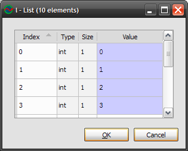
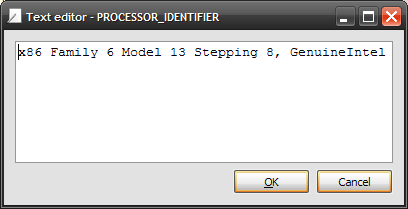
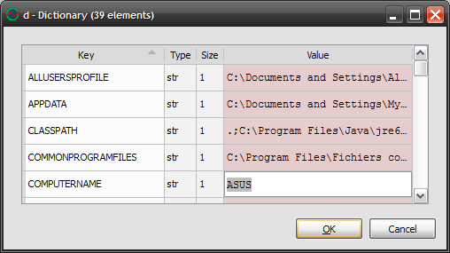
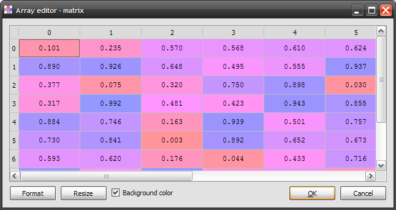
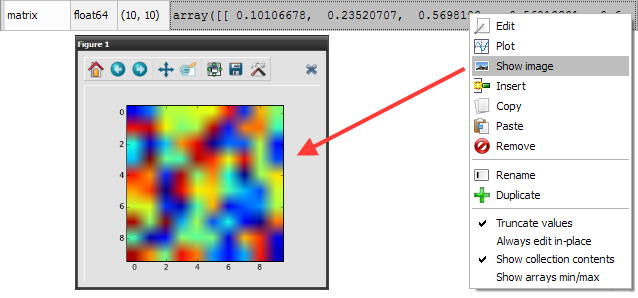
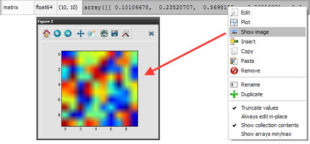

Interactive Console¶
The interactive console is a Python interpreter executed in the same thread as Spyder’s graphical user interface, providing unique features such as matplotlib figures integration or MATLAB-like Workspace.

- Related plugins:
The thread safe issue¶
The interactive console being not thread safe, one must be conscious that any blocking command send to the console will freeze the whole application, i.e. the whole GUI (Graphical User Interface) will be unavailable until command interpretation is over: events will not be processed by the GUI main loop, including keyboard events - meaning that not only the interface will be freezed but it won’t be possible to interrupt the process by pressing Ctrl+C.
However, there is one exception to this behaviour: standard output or error streams will automatically refresh interactive console’s widget by asking the GUI event loop to process queued events. This will also give the opportunity to the rest of Spyder’s GUI to refresh. In other words, an infinite loop with print statements will not freeze Spyder’s GUI and it will even be possible to interrupt it with Ctrl+C.
To sum up, when using the interactive console, please keep in my mind this thread-safe issue and eventually think about writing print statements in loops if you want to be able to interrupt them (when debugging for example).
Of course, Spyder has a solution to this thread-safe issue: the External Console, a Python interpreter executed in a separate process. But there is a price to pay: more safety, less interactivity (no matplotlib integration).
Reloading modules¶
The interactive console can force the Python interpreter to reload modules completely when executing import statements. This feature is however disabled by default because some modules may be not work properly with it (see Interactive console option submenu in the menu bar “Source” entry).
When enabled, this option will systematically reload imported modules since its activation. In other words, if you would like some modules to be loaded only once, you may import them before enabling the option.
Special commands¶
The following special commands are supported by the interactive console.
Edit script
edit foobar.py will open foobar.py with Spyder’s editor. xedit foobar.py will open foobar.py with the external editor.
Execute script
run foobar.py will execute foobar.py in interactive console.
Remove references
clear x, y will remove references named x and y.
Shell commands
!cmd will execute system command cmd (example !ls on Linux or !dir on Windows).
Python help
object? will show object‘s help in documentation viewer.
GUI-based editor
oedit(object) will open an appropriate GUI-based editor to modify object object and will return the result.
The Workspace¶
The workspace is a global variable browser for the interactive console with the features described below.

The following screenshots show some interesting features such as editing lists, strings, dictionaries, NumPy arrays, or plotting/showing NumPy arrays data.
    

The default Workspace configuration allows to browse global variables without slowing the interactive console even with very large NumPy arrays, lists or dictionaries. The trick is to truncate values, to hide collection contents (i.e. showing ‘<list @ address>’ instead of list contents) and to show only mininum and maximum values for NumPy arrays (see context menu options on the screenshot at the top of this page).
However, most of the time, choosing the opposite options won’t have too much effect on interactive console’s performance: